資料前處理
1.圖片與標註同步縮放與位置調整
目的是將圖片和對應的XML標籤檔案進行尺寸同步調整
(確保標籤框（Bounding Box）在縮放後的圖片中仍能精確地標示物品的位置)
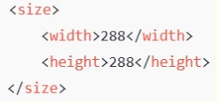
●XML標註框同步調整(更新XML檔案中size標籤，確保尺寸符合新圖片大小)
●縮放後的圖片和更新後的標籤檔案分別儲存到指定的輸出目錄
2.標註格式轉換為YOLO & 資料分割
用於yolov7模型的訓練前準備
●轉換標註格:
將 VOC 格式的標註資料轉換為 YOLO 格式，以適應YOLOv7訓練所需的資料格式。
●資料分割(樣本數:6089張)
樣本劃分—8:1:1=訓練集（4871張）：驗證集（609張）：測試集（609張）
●生成訓練、驗證、測試集列表(執行程式voc_annotation.py產生以下文件):
Train.txt: 記錄訓練集圖片的路徑
Val.txt: 記錄驗證集圖片的路徑
Trainval.txt: 記錄訓練集和驗證集圖片的路徑
Test.txt: 記錄測試集圖片的路徑
這些文件用於告訴 YOLOV7 訓練程式讀取哪些圖片來進行訓練和驗證。
模型訓練
程式架構：YOLOv7 目標檢測
●深度學習框架:使用 TensorFlow 和 Keras 作為框架
●參數配置
○ Init_lr：初始學習率設為5e-4
○ Freeze_Train = True 啟用凍結訓練，加速訓練過程並提升模型的穩定性
○ Freeze_batch_size：凍結訓練的批次大小設為 16
○ Unfreeze_batch_size：解除凍結後的批次大小設為 8
○ optimizer_type = 選擇 Adam 優化器，適合快速收斂
○ 數據增強（Mosaic 與 Mixup）：增加數據多樣性以提升模型的泛化能力
○ score_threshold：檢測的信心分數閾值設為 0.4
●模型結構
設置模型大小phi 值 : 設為l表示大模型，適合高精確度需求與計算資源需求也較高的場景
-phi值決定 YOLO 模型的版本與架構大小
●模型構建與訓練
使用 yolo_body 搭建 YOLOv7 模型，並根據給定的標註和類別數量進行自定義配置
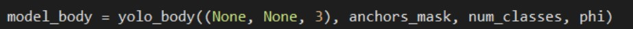
●加載預訓練權重：
通過 load_weights 使用預訓練模型加速訓練並適配自定義數據集，提升初期性能
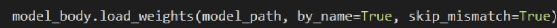
●訓練時自動調整學習率：
使用動態學習率調整優化訓練過程，提高收斂速度和穩定性。
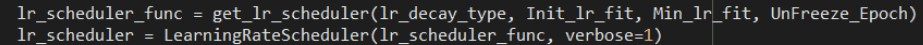
●模型保存與評估
訓練過程中定期保存模型:在訓練過程中保存性能最佳的模型權重
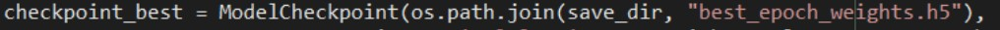
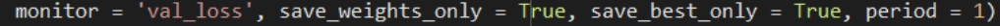
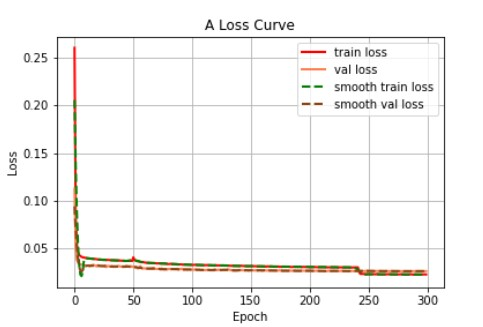 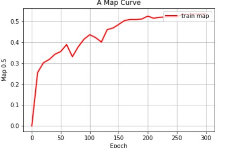
●觀察Loss結果：
○損失值在初始階段急劇下降，顯示模型快速學習數據特徵
○隨著 Epoch 增加，損失曲線趨於平穩，表示模型逐步收斂
○訓練損失與驗證損失接近，表明模型沒有明顯過擬合，學習效果良好
●觀察mAP(Mean Average Precision)結果：
○ mAP 是在所有類別各自的 AP 之後，再取平均，因此能綜合反映模型對所有類別的整體偵測能力。
若 mAP 越高，表示模型對多數類別的偵測都相對精準
○ mAP 隨著 Epoch 增加而上升，表示模型準確率逐步提高
○ mAP 上升的趨勢反映了模型有效學習了數據集的特徵，並達到了較好的性能
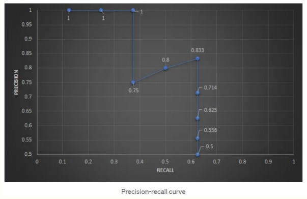 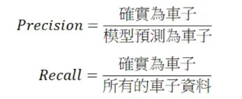
●AP介紹
訓練模型並測試模型預測應用設定
用途:從圖像中檢測物體並顯示或保存檢測結果
1檢測模型參數:修改權重檔案路徑和類別名稱(ps)檔案路徑
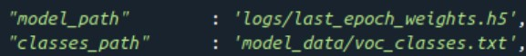
●設定圖片大小
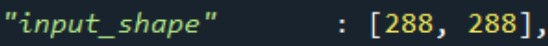
●設置檢測框標準
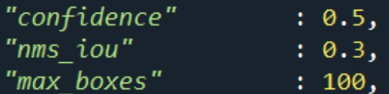
2.檢測圖片3.圖像繪製
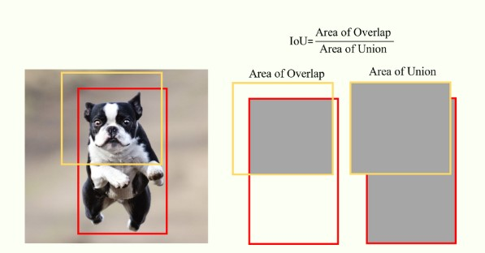
模型預測應用
●指定測試的模式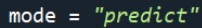
●圖片檢測
●指定是否在單張圖片預測後對目標進行截取 & 進行目標的計數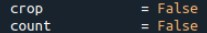
●檢測結果
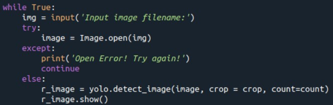
輸入檢測圖片的路徑
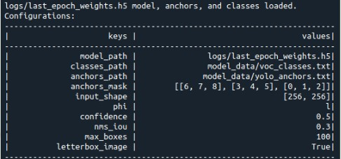
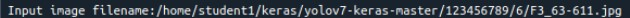
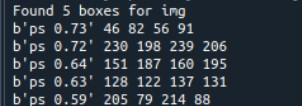
●呈現結果->
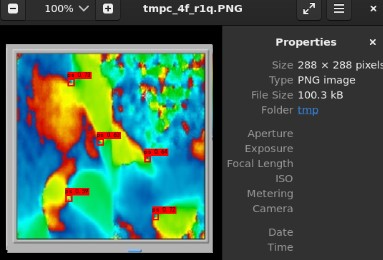
模型績效評估: Mean Average Precision(mAP)
○ m：針對所有類別的平均精準度（AP）取平均值。
○ A：計算單一類別的 Precision-Recall 曲線下面積，得出該類別的平均精準度（AP）。
○ P：預測結果中正確檢測的比例。
●用途：衡量物件檢測模型的整體精確性
●主要任務：
1.取得結果預測
2.取得真實框
3.計算mAP值(平均精度均值)
4.可視化結果
模型效能:
●mAP:61.65% ●Recall:45.24%
●Precision:75.00%
●F1 score:0.56
●Confidence:60~75%
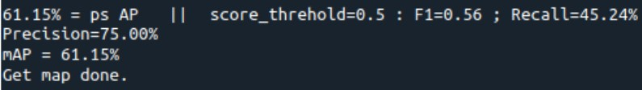 |
|
|